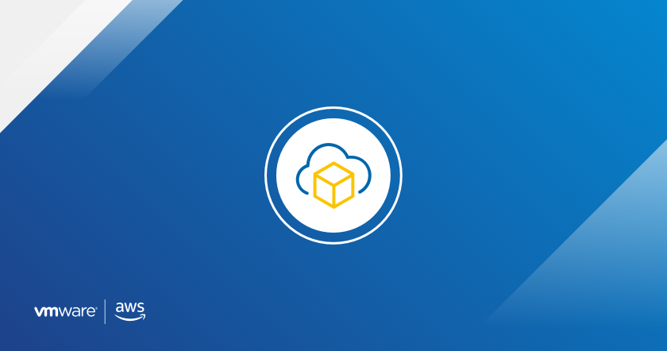

Getting Started Videos for VMware Cloud on AWS

I created several getting started videos for VMware Cloud on AWS, which has been featured on the VMware Cloud Community blog but I thought it’d be nice to add these to my personal blog as well.
VMware Cloud on AWS is a highly scalable, secure hybrid cloud service that allows organizations to transition rapidly and seamlessly to the cloud. Today, we are releasing a new set of videos to help customers get started with VMware Cloud on AWS. We will highlight some of the key capabilities of VMware Cloud on AWS that allow organizations to achieve better flexibility and resiliency in their VMware Cloud on AWS SDDCs. We will also demonstrate the simplicity and speed of migrating vSphere workloads from on-premises to VMware Cloud on AWS using VMware HCX.
I hope these videos help you get started with VMware Cloud on AWS. For additional information you can also visit VMware Cloud Tech Zone.
Adding a Host to a VMware Cloud on AWS SDDC
In this video, we demonstrate how to easily and quickly scale a VMware Cloud on AWS SDDC by adding additional hosts.
Auto Scaling with Elastic Distributed Resource Scheduler (EDRS)
Here we explain how Elastic Distributed Resource Scheduler (EDRS) monitors cluster resource utilization and automatically scales a cluster to allow for randomness in the cluster utilization while maintaining desired CPU, memory, and storage performance.
Building Resiliency with Stretched Clusters
VMware Cloud on AWS provides resiliency at different layers. vSphere High Availability (HA) protects against ESXi host failures, but what about AWS availability zone failures? In this video, we demonstrate how a Stretched Cluster can protect against an AWS availability zone failure.
Simplifying Management with Hybrid Linked Mode (HLM)
In order to manage both an on-premises environment and a VMware Cloud on AWS SDDC from a single view using the vSphere client, customers will need to configure Hybrid Linked Mode (HLM). This video provides a detailed walk-through of the deployment and configuration of HLM.
Migrating to a VMware Cloud on AWS SDDC Using VMware HCX
VMware HCX can seamlessly migrate vSphere workloads from an on-premises environment to a VMware Cloud on AWS SDDC. Here we highlight key capabilities of VMware HCX, such as Mobility Groups and Mobility Optimized Networking, and provide a demonstration of a vSphere workload migration leveraging Network Extension.